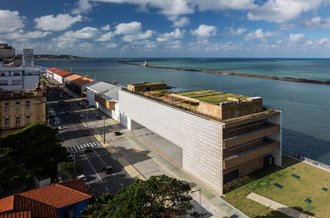
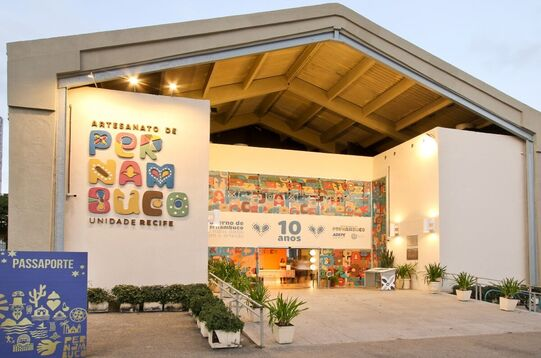

Museu Cais do Sertão
O Museu Cais do Sertão é um espaço interativo que celebra a cultura e a música do sertão nordestino, especialmente Luiz Gonzaga.
Centro de Artesanato de Pernambuco
O Centro de Artesanato fica ao lado do Marco Zero e reúne obras de mais de 1.800 artesãos de todo o estado.
É o lugar ideal para conhecer a arte local e levar lembranças culturais autênticas.